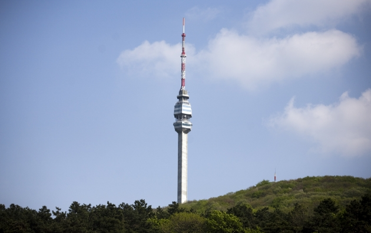
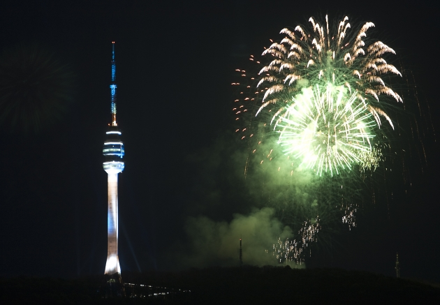

Beograd, glavni grad Srbije
Turisticka organizacija Beograda |
Turisticka organizacija Srbije
 Televizijski toranj na Avali
Avalski toranj bio je projektovan od 1959-1960. godine, a izveden od 1961. do 1964. godine, a potom pušten u rad 1965. godine. Bio je visok 202,87 metara. Jedan od najlepših TV predajnika u Evropi i svetu proradio je, posle petogodišnje izgradnje.
Avalski toranj, otvaranje 21.10.2010.
